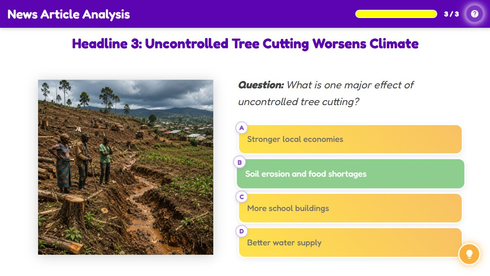

News Article Analysis
News Article Analysis
Activity Conclusion

Lesson Complete
Key Takeaways
| Effect | Detail |
|---|---|
| Over-exploitation | Leads to resource depletion and environmental degradation. |
| Loss of Livelihoods | Causes loss of income for farmers, fishermen, and others. |
| Resource Scarcity | Results in food insecurity and water scarcity. |
| Poverty Impact | Ultimately increases poverty by reducing income and making life harder. |
| The Solution | Protecting the environment helps reduce poverty. |
Activity Introduction
News stories do not just tell us what is happening, they show us the real-world consequences of how we use our resources. In this activity, you will read headlines from across Africa and uncover how overexploitation leads to poverty. Look closely. Think deeply. How are people’s lives being affected? Let us investigate like real journalists!
Learner Instructions
- Read each headline carefully and look at the accompanying image.
- Think about the situation, what is happening, who is affected, and how it connects to poverty.
- Select the answer that best explains the link between the headline and its impact on people’s lives.
- If your answer is incorrect or incomplete, use the feedback to rethink your choice and try again.
- Continue until you have analysed all the headlines.